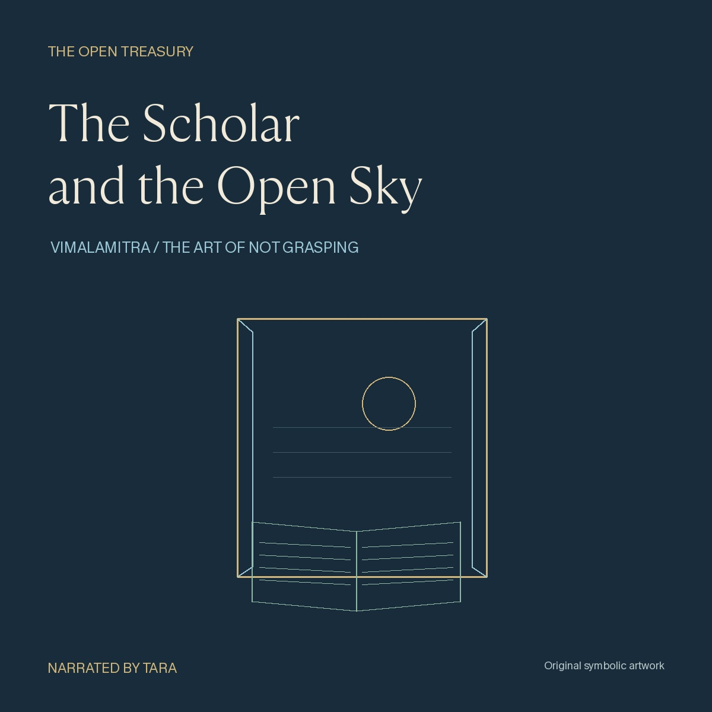

The Scholar and the Open Sky
Vimalamitra and the Art of Not Grasping
A 24-chapter original course on Vimalamitra: emptiness without nihilism, the temptation to possess awareness, friendship and receptivity, translation, the Heart Essence lineage, treasure and textual history, compassion and accountability.
Moving visual edition
Watch or download the original 720p symbolic animation
Chapters
- 00:00 - The One Who Still Had Something to Learn
- 02:16 - Three Ways a Person Survives
- 04:37 - Translation Is a Form of Care
- 06:51 - The Heart Sutra Is Not Vimalamitra's Composition
- 09:04 - Empty of What
- 11:28 - Do Not Build a Throne for Awareness
- 13:49 - The Water That Was Never There
- 16:01 - The Freedom That Does Not Need a Receipt
- 18:15 - Eight Refusals and Three Doors
- 20:43 - Naturally Luminous Is Not the Same as Always Pleasant
- 23:03 - Seven Hundred Lines of Refusing to Settle
- 25:16 - The Archer and the Sudden Shot
- 27:35 - Five Hundred Lifetimes of Being Impressive
- 29:47 - The Friend Who Becomes the Teacher
- 31:59 - A King, Three Translators, and an Ambiguous Utterance
- 34:11 - The Room at Night
- 36:27 - What a Stone Pillar Can Tell Us
- 38:32 - How a Teaching Becomes a Treasure
- 40:52 - The People Who Kept the Pages
- 43:17 - The Open Sky Is Not an Empty Head
- 45:56 - No Separate Thing Called Compassion
- 48:21 - When the Teaching Becomes an Alibi
- 50:41 - The Master Who Does Not Leave
- 52:51 - Leave the Window Open
Read alongside the course
Source companion PDF
Detailed sources and reading limits
Complete spoken script
Rights, narration and review
The course follows the early catalogue-supported commentator alongside later Heart Essence lineage accounts: emptiness, the temptation to make awareness into a possession, translation, the friendship with Jnanasutra, cultivation and sudden understanding, treasure and textual history, compassion, and accountability.
The complete root Heart Sutra and Seven Hundred Lines translations were read. Vimalamitra's complete commentaries were not independently read; translated passages and arguments are studied through modern scholarship. Sacred narratives, historical evidence, disputed attributions and scholarly interpretations are distinguished. The source companion states reading coverage and limits, including sources only partially available. No exhaustive treatment of the Great Commentary, Seventeen Tantras or Nyingtik Yabzhi is claimed.
This is study and reflection, not empowerment, pointing-out instruction, clinical advice, or a guide to advanced gaze, breath, posture or visionary methods. Everyday examples and ethical safeguards are original applications, not ancient quotations.
Synthetic narration uses approximate English pronunciations of specialist names. All clips received automated wording and signal checks, with targeted independent second recognition of uncertain passages, complete retakes of failures, and a single disclosed text revision to clip 26 after repeated omissions. Minor function-word or inflection variation may remain. No full human-ear or native-pronunciation certification is claimed.
The listening copy uses fixed +2.8 dB gain and transparent oversampled peak limiting only, without changes to words, speed, pitch or EQ. Untouched whole takes and an untouched lossless master are retained. Final MP3 measures -17.6 LUFS and -1.6 dBTP. The video uses original symbolic illustrations, not historical likenesses or copied source art. Chapter-card boundaries may differ by a small accumulated fraction of a second from the continuous audio because of frame rounding.
Original commentary, synthetic narration and original symbolic artwork are offered under CC0 only insofar as the creator holds rights. Source translations and third-party scholarship retain their own rights and are not placed under CC0. Lotsawa House translations are CC BY-NC 4.0; 84000 translations and the cited Journal of Tibetan Literature article state CC BY-NC-ND 4.0. No source translation is recited or redistributed here, and no support, donation or commercial solicitation accompanies the course. Translator credits and links are in the source companion.
Got a question? Ask Tara - the best listener questions become short answer episodes.
Searchable transcript
Auto-generated pilot, 21 November 2026. This is a selection of ten courses, not a top-ten listening chart. Open-source Whisper recognition, with term-spelling checks and targeted rechecks. Timestamps are approximate. [?] marks a reading to check against the audio before quoting. This is not a certified verbatim transcript or a new translation.
Text · WebVTT · Corrections and uncertainties · Prepared script · Source credits and rights
The source and translator rights stated for this episode apply here too. No new blanket CC0 grant is made.
The scholar and the open sky. Vimalamitra and the art of not grasping. Chapter 1. The one who still had something to learn. Imagine meeting an old friend after both of you have spent years becoming impressive. You have studied, you have traveled, people take your understanding seriously. Then you discover that your friend has learned something you have not. [?]
What happens next? There is an entire spiritual life inside that question. You could explain why the missing teaching is unnecessary. You could diminish your friend. You could collect the teaching as one more possession. Or you could do the difficult, ordinary thing. You could ask to learn. In a lineage narrative preserved by Longchenpa, Vimalamitra does exactly that.
Already an accomplished scholar and practitioner, he goes to his friend, Jnanasutra and becomes his student. The story includes prophecy, miraculous departures, and final instructions falling from the sky. We will not pretend that we can verify those events as a modern biography. But neither will we miss the human reversal inside them. Someone revered for knowing is willing not to know.
That is our doorway into Vimalamitra. There is the Indian Buddhist scholar whose commentaries survive in Tibetan. There is the translator associated with the great movement of Buddhist learning into Tibet. And there is the deathless master of the heart essence lineage. A presence carried through centuries of Tibetan religious imagination and practice. These are related portraits. They are not supported by identical kinds of evidence.
We are going to give each portrait room. We will read the philosophical problems closely enough that emptiness does not become a slogan. We will enter the lineage stories warmly enough that historical caution does not become an excuse for contempt. And we will keep asking what happens when the mind turns liberation into the most elegant thing it owns. This is a course of study and reflection, not an initiation or a substitute for personal instruction in advanced contemplative practices.
You do not need to manufacture an unusual experience to understand its central question. You only need to remember a moment when being right mattered more than being free. Chapter 2. Three ways a person survives. A person can survive in a document, in a story, and in a practice. Often the three overlap. Sometimes they pull against one another.
Vimalamitra survives in Tibetan Buddhist textual collections as the author of commentaries on the heart sutra and the perfection of wisdom in 700 lines. Early Tibetan catalogues provide particularly important support for those attributions. That gives us firmer ground than we have for many details in the later life stories. He also survives in narratives in which India, China, and Tibet are joined by extraordinary journeys, teachers, visions, hidden texts, and transmissions.
These accounts tell us how later communities understood the authority and meaning of their teachings. They are valuable evidence for that religious world. They are not contemporary travel records. Then, there is Vimalamitra as a living lineage presence. In the Nyingma tradition, the name is inseparable from the Vima Nyingtik, the heart essence of Vimalamitra. Here the question is not only what a man once wrote, it is how awakening is communicated, recognized, preserved, and renewed.
We do violence to this material if we flatten everything into one smooth factual biography. We also do violence if we imagine that only the smooth factual biography could matter. A poem is not a defective bank statement. A lineage history is doing work beyond reporting a sequence of publicly observable events. Still, when a poem names a king or a lineage history makes a claim about the 8th century, historical questions remain legitimate.
Our method is simple. We will say what kind of claim we are making. A surviving commentary can support an interpretation of an argument. A 14th century sacred history can support an account of how the lineage presents its past. A modern scholar can offer a persuasive reconstruction without making the reconstruction certain. There is no complete, securely dated, modern biography hiding behind this course.
Exact dates and the relationship between the different Vimalamitra portraits remain matters of difficulty. That limitation is not a whole we need to fill with confidence. It is our first exercise in leaving something unpossessed. Chapter 3. Translation is a form of care. Think about a sentence that matters to you. Perhaps something a parent said. Perhaps a line that changed the direction of your life. [?]
Now imagine carrying it into a language whose words divide the world differently. A literal rendering might preserve the dictionary and lose the meaning. A graceful rendering might preserve the effect and add something that was never there. Translation asks for judgment. And judgment creates responsibility. Vimalamitra belongs to the world in which Buddhist texts and systems of thought were being carried into Tibetan.
That work involved Indian teachers and Tibetan translators. Not a single solitary genius delivering a finished civilization. Colophons and catalogs allow us grimses of collaboration, revision, and attribution. They also leave questions unresolved. Even the title of a Buddha can reveal the problem. Sanskrit and Tibetan do not line up one sound at a time. [?]
A Tibetan rendering may carry an explanatory element without a matching Sanskrit syllable. A later commentator may explain the Tibetan expression itself. If we assume that every explanation is secretly analyzing an Indian original, we can misunderstand the argument before it begins. The scholar Toshio Horiuchi uses details like these to reconsider the origins and readings of Heart Sutra commentaries.
You do not need to master his philology to appreciate the lesson. A small word can change a large history. What looks like decorative scholarship may determine whose voice we are actually hearing. There is an everyday version. Someone says, I need space. You translate it immediately as they do not love me. Another person says, I disagree. You translate it as they are humiliating me.
The original sentence has barely arrived before your private translator has published an authorized addition. Accuracy begins by slowing that process down. What was said? What did I add? What remains uncertain? The care of translation is not opposed to the freedom of contemplation. It protects that freedom from our habit of hearing only ourselves. Before asking whether we have understood the ultimate, it may help to check whether we have understood the sentence. [?]
Chapter four. The heart sutra is not Vimalamitra's composition. The heart sutra is brief enough to become familiar before it becomes understandable. Familiarity is useful. It can also act like varnish. We recognize the sound and stop noticing the difficulty. Vimalamitra did not compose the root sutra. He commented on it.
That distinction matters throughout this course. We will also read the 700 lines as a root scripture that helps us understand his philosophical setting. Reading a scripture is not the same as reading every page of the commentary upon it. For the commentaries, our access here is through translated passages and analysis in modern scholarship, not a claim to have read their complete Tibetan texts. The source companion makes that boundary explicit.
The course's explanations and everyday examples are our own. In the longer heart sutra, the teaching occurs within a gathering and a meditative setting. Avalokiteshvara responds to Shariputra, and the Buddha subsequently approves the instruction. This is already more relational than the isolated sentence that often circulates on a wall. The text examines the five aggregates, bodily form, feeling, perception, formations, and consciousness.
These are ways of analyzing the processes we take to be a person. The point is not to find five little substances and rename them you. It is to investigate the person we imagine standing independently behind the processes. Consider your experience of an insult. There is a sound or a written mark, there is recognition, bodily contraction, an unpleasant tone of feeling, memory, interpretation, and a readiness to reply.
Then comes the announcement, I have been diminished. Nobody needs to deny the hurt. The investigation asks whether the supposedly solid owner of the hurt is found apart from these conditions, or whether it's apparent solidity is part of the event. This is where a short sutra becomes demanding. It does not merely offer a nicer description of your inner owner.
It puts the ownership arrangement under examination. And it does so without requiring us to pretend that an insult feels like a compliment. Chapter five, empty of what? If someone says that a room is empty, you quite reasonably ask what it is empty of. Furniture, people, air? When Buddhist philosophy speaks of emptiness, the same discipline helps.
Otherwise, emptiness becomes a grand word that can mean anything from spaciousness to despair. In the interpretation of Vimalamitra developed in Horiuchi's studies, the crucial absence is intrinsic nature. A thing does not establish itself independently through a self -sufficient essence of its own. This does not mean that appearances stop, that distinctions are useless, or that suffering becomes imaginary in the sense of unimportant.
Take a promise. It is not a lump hidden inside the words. It depends on speakers, intentions, shared conventions, memory, circumstances, and what follows. Yet the absence of an independent promise substance does not make promises irrelevant. Precisely because a promise exists through relationships, keeping or breaking it changes a life.
This is our illustration, not Vimalamitra's example. It helps us keep two mistakes apart. The first turns a dependently existing thing into a self -sufficient object. The second hears the criticism and concludes that there is no thing worth caring about at all. Emptiness refuses the first mistake without requiring the second. The heart -sutras relation between form and emptiness is therefore not a trapdoor beneath the visible world.
It is not saying that a chair is secretly made of a mysterious material called emptiness, nor do we have to travel from an inferior world of appearances into a second superior warehouse where emptiness is stored. The chair's lack of independent essence is not somewhere else. Its dependence on materials, assembly, use, designation, and conditions is not a defect accidentally added to an otherwise independent chair.
We can use the chair. We can repair it. We should notice when a leg is broken. The fact that the chair is empty will not hold us up if we sit carelessly. In this way, the teaching is less an escape from ordinary life than a correction of what we have been imagining ordinary life must be made of. Chapter 6. Do not build a throne for awareness. The mind can accept the emptiness of almost everything and keep one small kingdom untouched.
Yes, the body changes. Yes, thoughts appear and disappear. Yes, the world is dependent. But surely there is a final perfectly real awareness behind it all. Surely that is what I really am. This is a powerful temptation, because it can feel like the end of grasping while preserving the most refined form of ownership. Everything may dissolve, provided the witness keeps the estate.
In his studies of Vimalamitra's commentaries, Horiuchi argues that passages sometimes taken as endorsements of a truly established non -dual gnosis are better at his positions being challenged. On his reading, Vimalamitra criticizes the attempt to retain an ultimately real perfected nature after abandoning imagine duality. This is a scholarly interpretation, not a verdict that every use of awareness language in every Buddhist tradition means the same thing. [?]
The texts can be difficult about changes of speaker. Other scholars have read important passages differently. We should not settle a specialist dispute by speaking more loudly than its participants. But the philosophical question is clear enough to work with. Have we stopped grasping or have we given grasping a subtler object? Imagine throwing away every trophy, except the trophy for not collecting trophies.
The remaining object may be quite tasteful. The structure of the room has not changed very much. That does not prove that all experiences of open awareness are false. An experience may be clarifying and still be interpreted possessively afterward. The mistake can occur in the claim we make about it. Now I have found the permanent thing that will guarantee me. Vimalamitra's philosophical world asks whether even that guarantee can withstand examination.
We will later meet Dzogchen descriptions of primordial purity and spontaneously present awareness. We must let those descriptions speak in their own setting. We cannot simply equate them with the position criticized here or declare the two vocabularies automatically identical. For now, keep the question sharp. When you say awareness, are you pointing toward a release of fixation or furnishing a final room in which fixation can live?
Chapter 7. The water that was never there. A thirsty traveler sees water ahead. The appearance is vivid. The traveler walks toward it. There is no water to drink. The mirage is a familiar Buddhist image, but familiarity can hide its exact force. The correction does not destroy a real lake. It removes a mistaken understanding of an appearance. [?]
Translated passages discussed in the scholarship on Vimalamitra use images such as mirage water and the horse in a dream. These are ways to investigate the relation between an appearance and what we believe the appearance establishes. They are not instructions to dismiss other people's pain as a dream. If you dream of being chased by a horse, the fear can be enormous. On waking, you do not need to kill the horse.
You need to understand what kind of event occurred. There was an experience. There was not the independently existing pursuer you took yourself to confront. Now bring the image closer to home. You send a message. It receives no answer. By evening, you have constructed an entire social reality. Someone is angry, you've been exposed. A friendship has quietly ended. Then the answer arrives, their phone was broken. [?]
Notice the peculiar relief. The relief does not require a hostile person to become friendly. In the scene you had constructed, the hostile person was never there in that form. Something mistaken has ceased to govern you. This is a limited everyday analogy, not a proof of Buddhist emptiness. But it helps us understand how liberation can be described without making liberation a newly acquired substance.
Something can change deeply when an error is undone, even if no permanent treasure has been added to the owner. There is an ethical consequence. If the mistake involves another person, correction should make us more willing to meet them not less. The point is not that nobody exists and therefore nobody deserves a reply. It is that our projection is not entitled to replace them. The mirage teaching becomes unkind when we use it to tell someone that their thirst does not matter.
It becomes useful when we stop leading them toward water we cannot provide. Chapter 8. The freedom that does not need a receipt. Many of us approach spiritual life as a complicated purchase. We give time, effort, discomfort, and perhaps money. Eventually something should arrive that proves the exchange was worthwhile. The mind would like a receipt.
Before practice, anxious. After practice, permanently untouchable. Before practice, confused. After practice, certified. Vimalamitra's reading of the perfection of wisdom unsettles this arrangement. If the fruit is treated as an intrinsically existing object, the path can reproduce the very grasping it was meant to undo. A person can become intensely attached to the idea of being someone who has gone beyond attachment.
There are two poor ways to respond. One is to abandon cultivation because nothing should be gained. The other is to pretend we have gained nothing while secretly demanding recognition for the attainment. A more honest possibility is that change need not take the form of ownership. Think of learning to apologize. At first the task feels almost impossible. Every admission threatens the whole structure of your identity.
Over time you may become able to acknowledge a mistake without turning the conversation into a trial about whether you are a good person. Something real has changed in your conduct. You have not acquired an indestructible apology essence. Again, this is our everyday analogy. It does not reduce awakening to improved manners. It makes one logical point. The absence of a permanent object of acquisition does not make transformation meaningless.
What would practice look like without the receipt? We would still need honesty, patience, instruction and correction. We could notice whether reactivity loosens and whether other people are safer around us. But we would be less eager to build a final identity from the results. There is a tenderness in this. You do not have to turn every good moment into proof that you have finally become the right sort of person.
A kind action can simply be kind. A clear moment can pass without being embalmed. Freedom may become harder to display and easier to live. Chapter 9. 8 Refusals and 3 Doors The heart sutra can sound like a sequence of cancellations. No arising, no ceasing, no stain, no purification, no decrease, no increase.
If we hear only refusal, the teaching can feel like an enthusiastic demolition team, with no plan for the people inside. Vimalamitra finds an architecture in the refusals. As Horiuchi explains, the Tibetan reading discussed in the commentary distinguishes eight aspects, beginning with emptiness and the absence of characteristics. It does not divide the words exactly as every familiar Chinese or English version does.
Translation matters again. Vimalamitra connects these eight aspects with three traditional doors of liberation. Emptiness, signlessness, and wishlessness. The opening pair concerns emptiness. The middle group concerns signlessness. The final pair concerns wishlessness. The sequence is not random decoration. What might that help us hear?
Emptiness challenges the assumption that things carry in independent essence. Signlessness challenges our fixation on the marks through which we seize and establish them. Wishlessness challenges the appropriating movement that makes the path into the project of a solid owner becoming complete. Those sentences are an introductory explanation, not a replacement for the commentary s technical account.
In the text, the discussion is linked to Buddhist analyses of experience, defilement and purification, and the Bodhisattva stages. We should not pretend that three attractive English words exhausted. Still, the structure changes the mood. The teaching is opening doors, not praising destruction. Imagine arriving at a house with three locked entrances. At one, you insist that reality must have the sort of substance you can hold. [?]
At another, you insist that your descriptions must capture it completely. At the third, you insist that freedom must finish your private collection. Different locks, related habit. The teaching does not require that you stop using descriptions or making plans. It asks whether you can use them without asking them to do the impossible. Deliver a self -sufficient world to a self -sufficient owner. We will return to the ordinary doorway later.
For now, it is enough to notice that the refusals have a purpose. They are not telling us to stop caring. They are examining the way caring becomes possession. Chapter 10 Naturally Luminous is not the same as always pleasant. In a translated passage of the Heart Sutra commentary, Vimalamitra invokes the natural luminosity of phenomena while discussing stain and purification.
This matters because the historical commentator cannot be reduced to a cartoon of cold negation with warmth and luminosity reserved for a completely different religion. It also creates a danger. We may hear natural luminosity, and imagine a permanently pleasant condition glowing behind every experience. Then grief, confusion, or anger becomes evidence that we have failed to find it.
The passage is making a philosophical argument about the lack of intrinsic nature into filement, and in the removal of defilement. It is not promising that every psychological state will feel bright, nor does it establish a permanent luminous substance simply because the word luminous appears. Words need their arguments around them. Otherwise, we turn a difficult text into a shelf of inspirational labels. [?]
Consider anger. There may be heat, tension, a rapid account of what happened, a desire to strike back. If anger were your unchangeable essence, there would be no room to learn. If anger were literally nothing, there would be no need to restrain a harmful reply. Neither description fits the situation very well. Its conditioned character gives us somewhere to work.
We can step back. We can sleep. We can check the facts. We can return to the conversation without delivering every sentence the anger prepared. This illustration does not identify ordinary emotional regulation with Dzogchen realization. It keeps us from making the philosophical claim cruel. A person struggling with distress has not disproved a teaching about emptiness. They may need rest, practical support, or professional care, not a lecture about the natural purity of their mind.
And the person who hurt them does not become innocent because defilement lacks an independent essence. There is something quietly encouraging here. What is happening is not a final definition of what you are. That does not make change automatic. It makes a fixed sentence of spiritual failure unnecessary. You can take responsibility without carving the worst moment into a permanent self. Chapter 11, 700 lines of refusing to settle.
The perfection of wisdom in 700 lines is not a gentle handbook arranged around modern expectations. It is a scripture of conversations, reversals, and propositions that refuse to stay where we put them. Manjushri is central to its teaching. Again and again, seemingly secure positions are unsettled. Why use a text like this? Because the mind is remarkably good at turning a useful explanation into a place to hide.
Tell it that appearances are deceptive and it may withdraw into a private knower. Tell it that there is no such knower and it may settle in the belief that nothing matters. Tell it not to settle and it can become proud of being someone without a position. The scripture keeps disturbing the resting places. We have read the whole root translation for this course. That lets us notice something a collection of startling quotations would conceal.
Its uncompromising language belongs to a world of bodhisattvas, ethical cultivation, and concern for awakening. It does not float free as a general license for indifference. The text paradoxes should therefore be handled with patience. A sentence denying the ultimate availability of a person or an attainment does not automatically answer every practical question about conduct. [?]
You cannot remove a sentence from the setting, place it beside a harmful action and call the combination advanced wisdom. Think of a musician saying that in the finest performance there is no separation between player and music. We do not infer that there is no need to tune the instrument. We do not allow the musician to steal someone else's instrument on the grounds that ownership has vanished in sound.
That is our analogy, not the sutras. It reminds us that a statement about non -grasping cannot be understood apart from the kind of life it is meant to support. The 700 lines is difficult, partly because it will not give us a final intellectual chair to sit in. But difficulty is not a reason to replace it with vagueness. We can ask, passage by passage, which fixation is being challenged and what remains to be done for others.
Chapter 12. The Archer and the Sudden Shot One of the most useful images in the 700 lines is an archer. A beginner learns through training. An accomplished archer can act with a freedom the beginner cannot produce by merely imitating the final gesture. This image offers a way into the apparent conflict between a gradual path and sudden understanding.
A skill can develop over time while an insight occurs in a moment. The moment does not need to contain a little version of every hour that prepared it. And the hours of preparation do not mean that insight can be manufactured by adding up enough minutes. Think about understanding a difficult sentence in another language. You have studied vocabulary and grammar. Then one day someone speaks and the meaning arrives without your translating each word.
You could not have scheduled the exact second. Yet calling it effortless would conceal a great deal of effort. Spiritual traditions complicate this further because awakening is not merely another acquired skill. Still, the analogy helps us avoid two familiar mistakes. We should not demand that every realization feel like climbing a staircase. We should not pretend that declaring ourselves already at the top gives us the capacities of someone who has trained.
Several texts attributed to Vimlamitra concerned sudden and gradual approaches. Their attribution is disputed. Joel Gruber's research examines the textual and historical difficulties, including borrowings and the evidence of catalogues. We will not build a confident portrait of Vimalamitra as the author of both manuals when the ground does not support that confidence. Fortunately, we do not need to resolve that attribution to understand the central problem. [?]
It already appears in the securely relevant scriptural world. How can cultivation support a freedom that is not simply fabricated? The archer gives us a practical warning. Do not copy a master's lack of strain while ignoring the conditions that make it possible. Relaxed incompetence is not the same as freedom. And do not become so devoted to preparation that you refuse to let the arrow go.
Endless improvement can be another way of postponing the vulnerability of actually seeing. Chapter 13 – 500 Lifetimes of Being Impressive Let us return to Longchenpa's account of Vimalamitra and Jnanasutra. The two are learned men. In the story, Vajrasattva appears and tells them that they have spent five hundred lifetimes as scholars without attaining the fruition they seek.
They are directed toward Shri Simha. Five hundred lifetimes is sacred narrative, not a number we can verify. But what a devastating number to give an intellectual. Not five hundred mistakes. Five hundred lifetimes of being excellent at something that has not, by itself, finished the work. The story does not need us to despise learning. It is preserved by Longchenpa, a writer of formidable learning.
Its criticism is more precise. Knowledge can become an extraordinarily effective way of delaying the point at which knowledge has to change us. You can understand the structure of an apology and never apologize. You can describe attachment with elegance while exhausting everyone who shares your home. You can know that experience is conditioned while defending your own interpretation as if it arrived from outside all conditions.
Learning matters. The question is what job we have quietly hired it to do. Learning can protect us from ever being surprised. In that role, it will resist a teaching even as it memorizes the words. Or we might use learning to earn love, then being ordinary can feel like a failure. There is another possibility. Learning can help us understand more accurately.
Correction then becomes part of the work rather than an enemy of it. Vimalamitra sets out. The scholar moves toward another teacher. The story gives movement to an idea that can otherwise become another flattering theory. Perhaps my current competence is not the whole horizon. You do not need to believe that you have been a scholar for 500 lives to recognize the pattern.
One afternoon can be enough. You spend the entire conversation preparing the next intelligent thing you will say. Then you realize that you have not heard the person in front of you. What would it take to stop preparing the performance and begin again? Chapter 14. The Friend Who Becomes The Teacher After receiving teachings from Shri Simha, Vimalamitra returns to India.
Jnanasutra subsequently goes to the same teacher and receives further instructions. Later, Vimalamitra is directed to Jnanasutra and asks for guidance. There is no need to embroider the scene with an invented argument, an invented facial expression, or an invented private confession. The reversal already has enough force. The person who once asked about his friend's journey is now able to teach him.
A competitive imagination finds this unbearable. It wants spiritual life arranged as a permanent league table. Who arrived first? Who received the highest instruction? Who has authority over whom? Friendship becomes manageable only if the hierarchy stays still. The narrative refuses that comfort. Reception can move. You can be someone's benefactor in one season and their student in another.
What you have already received does not prove that there is nothing more to receive. That is a beautiful ideal. But we should distinguish humility from surrendering judgments. A person does not become a trustworthy teacher simply because our pride dislikes being corrected by them. Humility is openness to learning. It is not an obligation to comply with every demand wrapped in sacred language. [?]
The best ordinary parallel may be, the friend who tells you something unwelcome without trying to own you afterward. They know enough to see your evasion, they care enough to speak, and they leave you able to think, question, and act. Could you hear them without immediately producing your credentials? There's another side. Could you teach a friend without using the moment to settle an old score? [?]
Being right can intoxicate the teacher as quickly as it frightens the student. The lineage account culminates in Jnanasutra's departure into light and a final testament. We can respect that sacred setting while allowing the relational lesson to remain close. A teaching received is not diminished because it comes through someone we once regarded as our equal. Perhaps equality was never the obstacle. Perhaps the obstacle was our need to keep score.
Chapter 15, a king, three translators, and an ambiguous utterance. In Longchenpa's account, the Tibetan king sends translators with precious gifts to invite Vimalamitra. The master speaks in utterance that the translators understand in different ways. One hears an image of people rowing toward the far shore. Another hears an archer applying effort.
A third hears the relation of generosity, body, and mind. The translators note tells us that another version of the story gives only the first two interpretations. We should not erase that difference to make the tradition appear smoother than it is. It is an extraordinary entrance for a teacher of reality beyond conceptual fixation. Before he even reaches Tibet, language has already multiplied around him.
We can read the scene as sacred biography, without treating it as a recording of an actual diplomatic exchange. Within the story, several things happen at once. The King's invitation acknowledges that political power cannot simply command realization. The gifts support a journey. The translators reveal that a teaching passes through hearers whose understanding matters. No one receives a sentence without receiving it somewhere.
This does not mean that every interpretation is equally good. Boats and archers do not authorize us to make the utterance mean whatever we like. Rather, the scene makes the work of reception visible. A teaching is not a package sliding intact through an empty pipe. Our own listening works this way. Someone offers guidance. And ambition hears a method for getting ahead.
Fear hears a warning about inadequacy. Devotion hears a promise that all uncertainty can end. The words may be the same. The listener has already begun to arrange them. This is one reason a course cannot simply deliver a collection of impressive sayings. We need to examine the habits that will receive them. If you hear emptiness, what do you hope it will excuse? If you hear discipline, what do you hope it will guarantee?
If you hear that nothing needs to be fabricated, what work do you hope you will never have to do? Those are not vacuizations. They are ways of bringing the translator into the light. Chapter 16, The Room at Night. Longchenpa's biography places Vimalamitra at Samye, teaching and translating in a world where the public and the restricted are not the same. [?]
By day, in the account, there is the broad work of transmitting Buddhist learning. At night, there are esoteric teachings for a small circle. Longchenpa even disputes the size of that circle. He identifies five recipients and explicitly rejects an account that allowed only two. He also explains that one translator, named elsewhere, was no longer alive at the time.
This is worth noticing. A lineage historian is not merely repeating a single unchanging legend. He's evaluating and correcting versions within the tradition, though according to the sources and commitments of his own world. The night room can attract the modern imagination very quickly. We may picture the highest teaching as a secret object, whose possession will distinguish us from everyone outside. [?]
Then secrecy becomes the spiritual version of an exclusive club. But restriction can mean different things. It can concern the preparation required to understand an instruction, obligations between teacher and student, the risk of misunderstanding, and the conditions of practice. It can also be misused to prevent scrutiny. We should neither romanticize it nor assume that all boundaries are fraud.
For this course, the boundary is straightforward. We are studying the place and meaning of these traditions. We are not claiming to confirm empowerment, establish a practice relationship, or authorize someone to perform advanced methods because an audio file described them. Some available texts discuss gazes, breathing, bodily postures, subtle channels, and visionary progress. We will not convert those details into a self -directed exercise. [?]
Giving a verbal recipe without the setting that makes it intelligible would not be generosity. It would be careless confidence. There is plenty to learn without pretending to have crossed that threshold. We can examine the difference between attention and fixation, between openness and vagueness, between trust and obedience. We can become better readers. The existence of a closed room does not oblige us to force the door, nor does it prevent us from asking sensible questions about the house.
Chapter 17. What a stone pillar can tell us. Near the temple known as the Temple of the Hat, inscriptions preserve evidence of the imperial Tibetan world associated with Nyang Tingdzin zangpo, an important figure in the Vimala Mitralinians accounts. Stone is reassuring. After visions, prophecies and masters dissolving into light, a carved inscription can feel like the solid object we have been waiting for. [?]
But an inscription tells us what it tells us. Evidence of Nyang's political role, royal favor and temple privileges, is not automatically evidence for every later account of teachings concealed in that temple. A document cannot be made to authenticate a claim merely because the same name appears in both. Sam Van Schaik's discussion of the temple helps keep these questions apart.
The surviving material records matter. So do the later treasure narratives. They must not be confused simply because we want either belief or disbelief to have the final word quickly. This distinction is useful far beyond Tibet. Suppose an old house really existed. Its owner really lived there, and a letter really mentions a locked room. We still have not established what was inside the room.
A chain of plausible associations is not the same as a chain of evidence. Equally, the absence of a surviving inventory does not prove that the room was empty. Responsible uncertainty works in both directions. We can therefore say that later tradition connects Nyang, Vimalamitra, and the concealment of heart essence teachings. We cannot treat the pillars as an eighth century certificate of the entire later corpus.
That may sound like a small scholarly caution. It protects something large, the possibility of respecting a tradition without requiring evidence to lie for it. The same generosity should extend to doubt. A question does not have to be an attack. A person asking what an inscription establishes may be caring for the material more faithfully than someone who makes it establish everything. If emptiness includes releasing our grip uncertainty, the historian is allowed a little of that freedom to. [?]
Chapter 18. How a Teaching Becomes a Treasure In Tibetan Buddhist treasure traditions, teachings may be concealed for a later time and revealed when circumstances are appropriate. The Vima Nyingtik is carried within this world of concealed concealment, discovery, transmission, and visionary authority. It would be too simple to say that a treasure is merely an old manuscript found in a wall. It would also be too simple to assume that every treasure account describes an event with no material counterpart. [?]
The category is religiously and historically more varied than either slogan allows. Rob Mayer has explored how some early treasure traditions may involve found manuscripts and their interpretation. His argument concerns particular evidence and contexts. It does not prove that every treasure text was found in the same way, or settled the authorship of the Vima Nyingtik. One of the most interesting questions is what discovery requires. [?]
Finding a text does not itself explain how it becomes authoritative. Someone must recognize, read, preserve, organize, and transmit it. Communities must decide that it is more than an old bundle of pages. The modern mind sometimes imagines that living transmission and written preservation are opposites. Here, they are entangled. Instructions move through people, people collect, and arrange texts.
Later masters interpret what they inherit. The name of an early teacher can become the center of a much larger historical constellation. This does not give us permission to attribute every item in that constellation to the historical Vimalamitra. A collection can bear his name and contain layers of material produced, preserved, and expanded across centuries. But later development is not automatically a synonym for spiritual emptiness.
Music continues because people perform it, teach it, adapt its settings, and hear possibilities that an earlier generation could not have anticipated. The historical work is to distinguish continuity, attribution, change, and invention without making them mean the same thing. For a practitioner, the treasure may be understood as a compassionate provision for a future time. For a historian, the question concerns texts, witnesses, institutions, and dates. [?]
We can hear both questions without pretending they are interchangeable. The treasure becomes less useful when we use it to stop inquiry. It becomes more interesting when we ask how people learned to receive it. CHAPTER 19 THE PEOPLE WHO KEPED THE PAGES A tradition centered on an extraordinary master can make the people who preserved it disappear. We remember the light. [?]
We forget the person who kept the paper dry. The heart essence tradition gives us reason to look again. Nyima Bum, a Tibetan master of the 12th and early 13th centuries, is important to the systematization of Nyingtik teachings. A recovered work associated with him arranges the material through 11 topics. Khenpo -Yeshi's research compares this earlier structure with later treatments by Longchenpa and Rikzin Godem.
The study argues for Nyima Bum's substantial influence. That does not make the entire tradition a single person's invention. It changes the distribution of attention. The famous 14th century synthesis stands within an earlier history of organizing, teaching, and interpreting. What can look timeless from a distance has a textual history when we move closer. A short biography within the Vima Nyingtik portrays Nyima Bum as a precocious teacher who also learned from masters beyond one narrow institutional boundary.
The translator cautions that the biography's authorship is uncertain. Its placement among Longchenpa's writings does not establish that Longchenpa composed it. Even the archive teaches us not to confuse a shelf with a signature. Centuries later, a catalog by Shechen Ontrul describes the labor of preparing a printed edition of the Vima Nyingtik. He consulted older versions, corrected errors, confronted unfamiliar spellings, and acknowledged texts that could not be found. [?]
patronage, supported scribes, carvers, and editors. The teachings did not arrive on our screens through the power of exalted intention alone. This is a beautiful companion to the language of effortless awareness. Whatever a tradition says about the uncreated nature of reality, its books still require work. Someone pays the workers. Someone checks a line. Someone admits that a missing text is missing instead of filling the gap with something that sounds plausible.
We should be grateful for both kinds of devotion, the devotion that receives a blessing, and the devotion that refuses to introduce an error. If you have ever done invisible work so that someone else could learn, the tradition survival contains something recognizable. Not every contribution comes with a throne. Some come with a stack of pages and another careful pass through the proof. Chapter 20, the open sky is not an empty head. [?]
Dzogchen, the great perfection, is not one simple instruction to stop thinking. In the later Nyingma classifications, it includes different series and cycles, extensive literature, initiation, contemplative methods, and exacting distinctions between ordinary mind and wisdom. The Nyingtik belongs to the Pith instruction series. Its literature speaks of primordial purity and spontaneous presence.
Very broadly, primordial purity concerns freedom from the stains and conceptual constructions we ordinarily impose. Spontaneous presence concerns the expressive fullness that prevents this freedom from being reduced to a vacant nothing. These are orientation words, not definitions sufficient to practice from. Our source texts include later lineage explanations. They express their own hierarchies and sometimes criticize other Buddhist approaches sharply.
We can describe those claims without adopting every polemical judgment as a neutral account of other schools. There is also a philosophical tension we should not hide. The historical commentaries challenge reified forms of knowledge and reality. Later, heart essence language can sound strongly affirmative about awareness and the ground. Is this continuity, reinterpretation, a difference of context or sometimes a real disagreement?
We should not force a single answer where the historical and textual questions remain open, nor should we decide that the mere presence of an affirmative word proves belief in a permanent self. The work is to ask how a term functions within an argument and a practice tradition. One distinction is especially important. Doleness is not freedom from fixation. A blank spell can feel peaceful because less is being noticed. [?]
That does not make it liberating wisdom. The sources themselves resist confusing ordinary non -conceptual states with the awareness they describe. Likewise, an open sky is not a command to erase the weather. Thoughts and emotions do not have to disappear for us to stop treating each one as a royal decree. This is our modest reflection, not a formal pointing out instruction.
Notice the difference between a thought occurring and the demand that it define the whole situation. Perhaps the thought says that you are failing. The thought is an event. Whether it's verdict is accurate remains a question. You can leave a little room around the sentence without pretending you have realized the nature of mind. Ordinary honesty is already more useful than an extraordinary claim you cannot support.
Chapter 21. No separate thing called compassion. If we make compassion into a possession, it becomes surprisingly heavy. We must be the compassionate person. We must feel the correct feeling. We must receive some sign that our goodness has arrived safely in the other person's mind. If they remain distressed, ungrateful, or difficult, the project becomes an injury to us.
Applying the argument of emptiness to generosity, we can ask whether the giver, the gift, and the receiver can be found as independently established things. This does not remove generosity. It can loosen the machinery that turns generosity into a demand. Imagine bringing food to someone who is overwhelmed. You could spend the visit needing them to appreciate what kind of person you are.
Or you could find out where the food belongs, check whether anything else is actually useful, and let them have a difficult day without reassuring you. The second action may feel less spiritually impressive. It may help more. That is an everyday application of non -grasping, not a claim that we have completed a Bodhisattva's path. It points toward the relation between wisdom and care that would be lost if emptiness meant indifference.
In the later heart essence descriptions, compassionate responsiveness belongs within the account of awareness itself. We should not treat that language as a promise that anyone claiming realization will automatically behave well. Conduct still needs to be observed. Claims still need to be questioned. But the tradition is not presenting a final ideal of serene disconnection from suffering beings.
A useful test follows. Does our understanding make another person's experience more available to us or less? Can we listen without immediately replacing them with a philosophical category? Can we respond to a need that does not flatter our preferred role? Sometimes compassion is dramatic. More often it is exact. It is the right kind of help at a tolerable time without an invisible invoice.
There may still be fatigue, limits, and mistakes. Non -grasping does not require unlimited availability or the abandonment of boundaries. It asks us to reduce the self -making added to what is already difficult. The meal can nourish someone without proving that you are a saint. That is quite a relief for everyone at the table. Chapter 22, when the teaching becomes an alibi.
Every strong teaching has a counterfeit that borrows its vocabulary. Emptiness can become nothing matters. Natural purity can become, I do not need to take responsibility. Beyond concepts can become, you are not allowed to question me. Devotion can become a request to lend someone else your judgment indefinitely. These are not sophisticated conclusions. They are ways of protecting ordinary power with extraordinary words.
The philosophical material we have studied does not support them. The denial of intrinsic nature does not cancel conventional consequences. The absence of a permanent stain does not mean that a harmful action left nobody hurt. A lineage's account of realization does not turn every claim made in its name into a fact. Think about an apology that begins by explaining that the self is an illusion. It is unlikely to improve the conversation.
The person waiting for an apology needs you to recognize what happened, not demonstrate that you have found a vocabulary spacious enough to avoid it. Or consider a teacher who insists that discomfort always proves the student's resistance. That explanation can never lose. Agreement proves wisdom. Disagreement proves the need for more obedience. A system that interprets every possible response as confirmation is no longer allowing the student to bring evidence.
This course offers a different rule of thumb. A claim of freedom should make room for correction. It should not make the claimant less accountable than an ordinary person. The rule is ours, offered as an ethical safeguard, not presented as an ancient quotation from Vimalamitra. We need not invent a textual authority for every sensible precaution. If a practice is making you confused, frightened, sleep deprived, or less able to manage daily life, do not use the language of transcendence to force yourself further.
Pause, seek appropriate supports. Advanced methods require competent guidance. And sometimes the right help is practical or clinical, rather than spiritual. Nor must you prove a final philosophical position before setting a boundary. You can decline a demand because it is unsafe, coercive, or not something you consent to. The sky does not become less open because you close a door that someone is trying to force. [?]
Chapter 23 The Master Who Does Not Leave Longchenpa's biography concludes with Vimalamitra departing for Wutai Shan in China, where the account says he will remain until the end of the eon. Other lineage narratives describe continuing emanations and encounters. The master is not simply filed away as a person who died long ago. This is a religious claim about continuing presence. [?]
We cannot verify it as we verify a printed colophon. We do not need to ridicule it to keep that distinction intact. A tradition can experience its founder as available through prayer, vision, ritual, and teaching. The historian can study when those accounts appear and how they function. Neither question is answered merely by restating the other. There's also an ordinary truth nearby, though we should not use it to explain away the sacred claim. [?]
A person can remain active in us after direct contact ends. A teacher's question interrupts our complacency. A friend's kindness changes how we treat a stranger. Someone long dead helps us recognize a habit we had not named. The ordinary truth does not prove the miraculous one. It helps us understand why continuing presence matters. What would it mean for Vimalamitra to remain present in this course?
Certainly not that we have established a visionary encounter. Perhaps it means that a question from his philosophical world has become difficult to forget. What am I treating as independently real? What have I made into a final refuge for grasping? Could I receive a correction without defending the entire history of myself? And perhaps the lineage stories contribute another question. When the next teaching arrives through a friend, will I recognize it?
Or will I dismiss it because the person carrying it does not fit the shape of my need to be exceptional? We can carry those questions without a claim to supernatural access. We can also leave room for practitioners to understand the master's presence in the fuller terms of their own tradition. Respect does not require that everyone mean exactly the same thing. Sometimes it requires that we do not quietly take another person's meaning away.
Chapter 24. Leave the window open. We began with a scholar who still had something to learn. We have met him through different doors. In the early catalog supported commentaries, Vimalamitra helps us investigate a freedom that cannot be secured by turning wisdom into a thing. In the later lineage accounts, he receives and transmits teachings within a world of friendship, devotion, revelation, and extraordinary presence. [?]
In the history of the heart essence, his name becomes a center around which generations of teachers, writers, editors, and practitioners gather. We have not collapsed those doors into one. Their differences are part of what makes this subject worth studying. Now imagine a fairly ordinary tomorrow. A message arrives and you read more into it than it says. Someone corrects you and your body prepares to defend a throne.
You have a clear moment and immediately want to preserve it as evidence that you have changed. You help someone and notice a small wish to be admired. None of that has to become another occasion for spiritual self -contempt. The point is to recognize the movement sooner, with a little less investment in proving that it is not happening. You might check the message before judging the person. You might let the correction contain one true thing.
You might allow the clear moment to pass. You might finish the helpful action without collecting its reflection in someone else's eyes. These are modest possibilities. They are not a certificate of realization. They do, however, give the course somewhere to live besides a shelf of ideas. And if the philosophical argument remains difficult, that is alright. The task is not to become fluent in saying that nothing exists. [?]
It is to investigate how things exist without demanding that they carry the impossible weight of making us permanently secure. The teacher, the teaching, and the listener need not be independent substances for the meeting to matter. They need not last forever in their present form for gratitude to be appropriate. There is work to do. There are texts to read carefully. There are people to answer, harms to repair, and forms of practice that deserve proper instruction.
Nothing in the open sky relieves us of the need to care for the ground we are standing on. But perhaps we can do the work without closing our hand around it so tightly. When your old friend knows something you do not, let there be a little room. The next teaching may be waiting there.